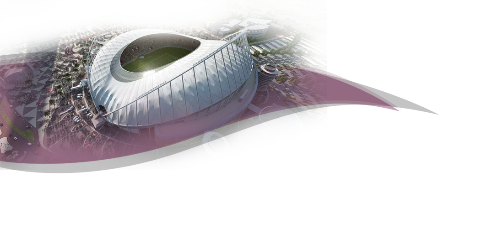

La cita comienza el 20 de noviembre
Conocé las sedes de Qatar 2022

La cita comienza el 20 de noviembre
40 mil espectadores
60 mil espectadores
44 mil espectadores
40 mil espectadores
43 mil espectadores
50 mil espectadores
40 mil espectadores
86 mil espectadores
El proyecto qatarí comenzó en enero de 2009. Fue entonces cuando la FIFA abrió el proceso de candidaturas para los Mundiales de 2018 y 2022. Quedaba mucho tiempo, sobre todo para la segunda de las citas, pero Qatar lo tenía claro. Quería optar al Mundial. Quería darse a conocer al mundo y organizar una cita espectacular, única.
Los qataríes finalmente se impusieron en la votación a EE UU (su principal escollo), Corea del Sur, Japón y Australia. El triunfo de Qatar sobre los estadounidenses se entendió como una victoria del emergente dinero de Oriente Medio sobre el tradicional mercado anglosajón.
Con más de 10 años para preparar el Mundial, Qatar se entregó al máximo para crear un Mundial irrepetible. El primero en disputarse en otoño, por las extremas condiciones climáticas de la región durante los meses de junio y julio, el calendario habitual de los campeonatos mundiales a lo largo de la historia.
Además, la idea de Infantino de ampliar a 48 selecciones el torneo desde 2022 hacía casi inviable que se celebrara sólo en Qatar. Finalmente no ocurrió y se aplazó esta decisión a 2026.
Qatar es un territorio pequeño, el más pequeño que jamás albergó un Mundial, con solo 11.581 km cuadrados de superficie y apenas 3 millones de habitantes. Tampoco hay un gran arraigo futbolístico. Se tuvieron que construir 7 estadios y remodelar otro, el histórico Al Khalifa. El desembolso económico en busca de la excelencia no fue un impedimento; sí las condiciones laborales de los obreros, la arista que el mundo anglosajón utilizó para focalizar sus críticas. La FIFA ordenó inspecciones y nuevas legislaciones.
Qatar ofrece a sus visitantes actividades para todos los gustos, desde turismo por la naturaleza y excursiones que cubren todos los aspectos de la vida local.
Además de sus espectaculares playas e islas, Qatar alberga hermosos desiertos y terrenos rocosos. Los visitantes pueden disfrutar de safaris por el desierto, montar en camello y acampar bajo las estrellas en una tienda beduina, o quizás deleitarse viendo Khor Al Udayd, conocido como “el Mar Interior”, con sus impresionantes formaciones dunares. Otro lugar interesante es Al Jassasiya, una espléndida zona de tallas en piedra en la que los visitantes podrán ver ejemplos de esculturas prehistóricas.
El metro de Doha fue inaugurado por Infantino y conecta las ocho sedes del Mundial. Está listo desde 2020 y con sus tres líneas terminadas.
La creación del metro es una de las joyas de la corona del Mundial. Las tres líneas que atraviesan la ciudad conectarán los ocho estadios. Cinco de ellos tendrán parada propia y los otros tres estarán unidos hasta la estación más cercana mediante un servicio de buses. Los cinco campos que tendrán metro en la puerta son Lusail, Khalifa, Ras Abu Aboud, Education City y Al Rayyan. El metro de Doha cuenta con 79 kilómetros de vías, tres líneas (Roja, Verde y Dorada) y 37 paradas. Dispone de 110 trenes, todos ellos sin conductor, y alcanza una velocidad punta que superará los 100 km/h.
El Mundial sin duda brindará a los aficionados al fútbol de todo el planeta la ocasión de disfrutar de una experiencia única en este país del golfo Pérsico.
Qatar tiene muchos complejos turísticos maravillosos, en los que la gente puede escapar del bullicio de la vida diaria y relajarse. Cabe citar el Sealine Beach Resort, situado en una de las franjas costeras más destacadas de las proximidades de la capital. Otra opción para los visitantes es el Al Ghariya Resort, en el paseo marítimo, repleto de zonas peatonales, como la Corniche de Doha, un malecón que se extiende a lo largo de varios kilómetros bañado por la bahía de Doha, en la capital del país.